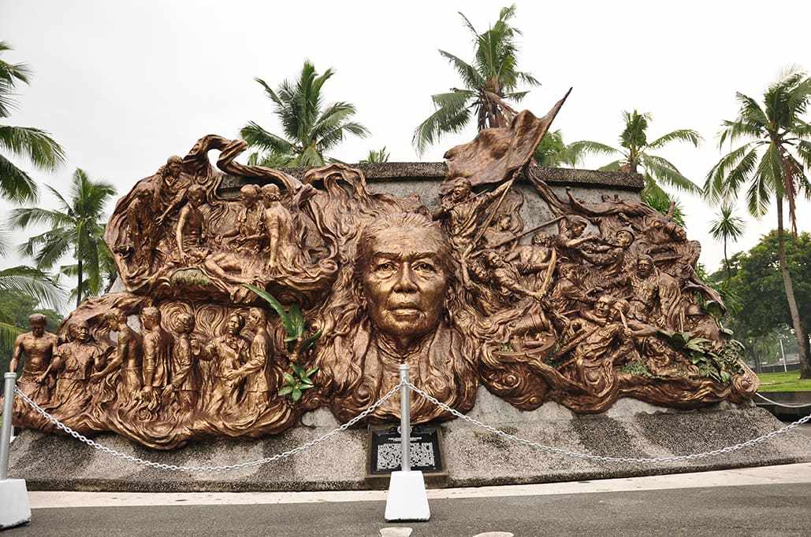

Melchora Aquino de Ramos
"Tandang Sora"

The sculpture captures the compassion of Tandang Sora for her countrymen.
Early Life
- Melchora Aquino was born on January 6, 1812. Her full given name at birth was Melchora Aquino de Ramos.
- Melchora was the only daughter of Juan and Valentina Aquino, who were a peasant couple living in Caloocan.
- Melchora was noticeably literate and highly intelligent at a very early age, even though she was never afforded the opportunity to go to school.
- In addition to her intelligence, Melchora was also a very talented singer who performed at local events. She also was known for singing at Mass when she attended church.
Marriage and Family
- When she became an adult, Melchora married a village chief by the name of Fulgencio Ramos.
- Together Melchora and Fulgencio had six children. However, by the time the youngest of the six children was just seven years of age, Fulgencio passed away. This left Melchora to raise the six children on her own as a single parent.
- In order to make ends meet, Melchora opened her own store to support her family.
The Philippine Revolution
- In 1896, the Philippine revolution began as Spaniards invaded the Philippines and attempted to take it for themselves. At the time Melchora was 84 years of age.
- She used her store as a means to provide medical care to the soldiers who were fighting in the war. She not only provided them medical care, but she also provided them encouragement through prayer.
- Her store was also used for secret meetings. Due to her behind the scenes heroics during the revolution she became known as Mother of the Katipunan, which was the Philippine word for revolution. She also became known to many of the Philippine revolutionary soldiers as Tandang Sora.
- When the Spaniards learned that she was providing this medical care and encouragement to their enemies, they arrested Melchora and questioned her on where they might find the Katipunan leader, Andres Bonifacio.
- Melchora refused to tell the Spaniards anything and for that she was deported to the Mariana Islands.
- When the United States took control of the Philippines in 1898, Aquino was permitted to return to her home and store.
Death and Legacy
- Melchora died at the age of 107 on March 2, 1919. Her body is buried at the Himlayang Filipino Memorial Park, which is located in Quezon City.
- She is best remembered for her heroics during the revolution and is memorialized in many ways in recognition of her contributions. Her name is the name of a district and a city road in Quezon City and her image can be seen on a 100 peso bill.
If you like to read more about Melchora Aquino de Ramos, check out gov.ph entry.